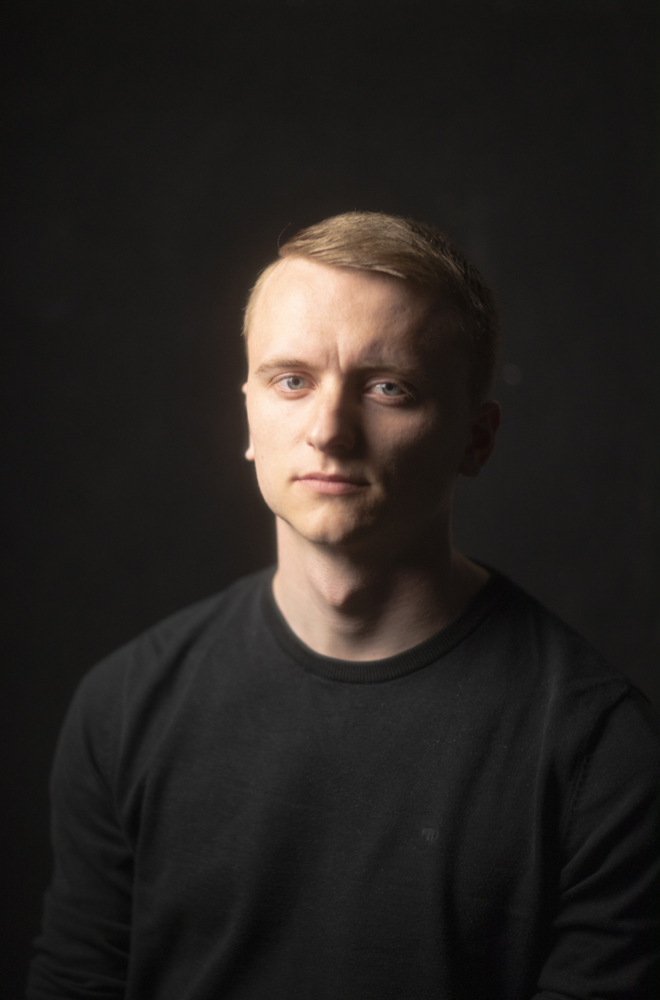
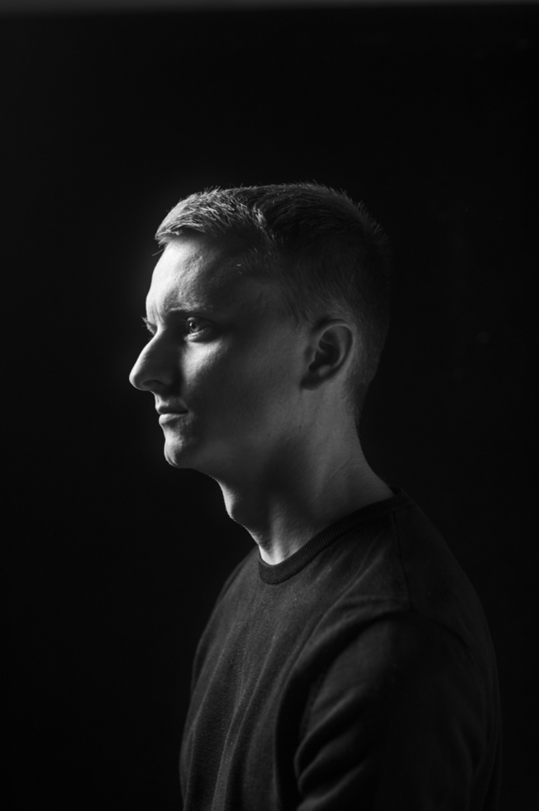
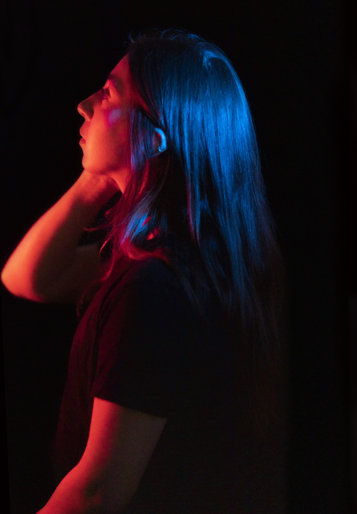

Photography: Book of Light
Scope
In this book titled “Book of Light”, I share the knowledge and insights I gained from the course “Light and Form” taught by Kevin Gater at Mittuniversitetet Sundsvall.
Read Book
Project Case
Main job:
Researching
Photographing
Lighting Subjects
Documenting
Date:
2023.6.4
Overview:
Within the pages of my “Book of Light,” I not only delve into the teachings from Kevin Gater’s course on “Light and Form” but also reflect on my own photographs, highlighting what succeeded and areas where improvement can be made.
It is my aspiration that through reading this book, your comprehension of light in photography will expand, allowing you to further refine your artistic vision.
Outcome:
A book about my photographic journey as an exchange student in Sweden!



All projects